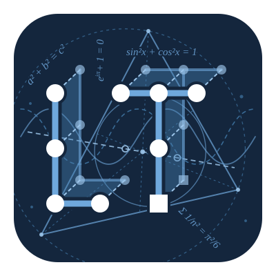

Az \(n\) különböző elem összes lehetséges sorrendjét az \(n\) elem permutációinak nevezzük. A permutációk száma: \[P_n=n!.\]
Példa. Hányféleképpen helyezhető el öt könyv egy polcon?
Az első könyvnek 5, a másodiknak 4, a harmadiknak 3, a negyediknek 2, az utolsónak pedig 1 lehetséges helye marad. Ezért \[P_5=5\cdot4\cdot3\cdot2\cdot1=120.\]
1. Számítsuk ki \(C_7^7\) értékét: \[C_7^7=\frac{7!}{(7-7)!\,7!}=1.\]
2. Számítsuk ki \(V_7^5\) értékét: \[V_7^5=\frac{7!}{(7-5)!}=\frac{7!}{2!}=2520.\]
3. Határozzuk meg \(n\)-et, ha \(C_n^2=10\). \[\frac{n(n-1)}2=10
\Longrightarrow n^2-n-20=0.\] A megoldások \(n=5\) és \(n=-4\). Mivel \(n\) természetes szám, \(n=5\).
4. Hányféleképpen
ültethető le hat tanuló két padba, ha minden padban három tanuló ül, és a padon
belüli helyek különböznek?
Mivel az összes elemet (tanulót) átrendezzük az összes helyre, ez pontosan egy 6 elemű halmaz permutációja, aminek a képlete: \[P_6=6!=720.\]
Határozzuk meg az \(n\) természetes számot, ha:
\(C_n^2=10\);
\(\dfrac{(n+1)!}{(n-1)!}=12\);
\(C_n^1+A_n^1=12\).
Számítsuk ki: \(C_7^5\), \(C_5^5\), \(A_7^5\), \(A_5^5\) és \(P_5\).
Egy osztályban 8 fiú van. Hányféleképpen választható ki közülük egy négyfős csapat?
Hány különböző háromjegyű szám alkotható az \(\{1,2,4,5,6,9\}\) számjegyekből, ha egy számjegy egy számban csak egyszer szerepelhet?
Hány egyenest határoz meg hat pont, ha közülük nincs három egy egyenesen?
Hányféleképpen rendezhető el négy különböző könyv egy polcon?
Hány háromelemű részhalmaza van egy hat elemű halmaznak? Hány részhalmaza van összesen?
Számítsuk ki: \(C_{2015}^5-C_{2015}^{2010}\).